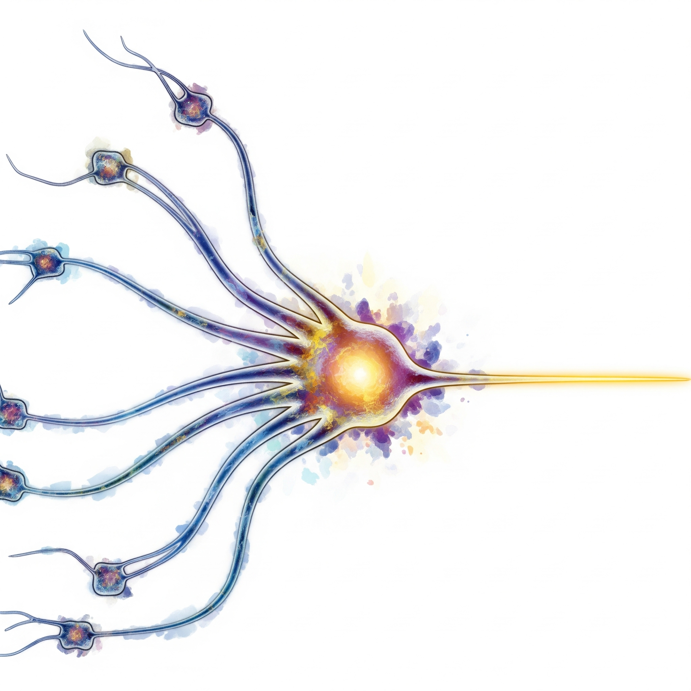

人工知能
人工知能とは
AIという概念は、1956年にダートマス大学で開催された会議で初めて正式に提唱されました。当時の研究者たちは、「機械に人間のような知能を持たせることができるか」という根本的な問いに挑戦し始めました。この問いは今日でも続いており、AIの発展とともにその答えも進化し続けています。
現在のAIは、弱いAI（Narrow AI）と強いAI（General AI）に大別されます。弱いAIは特定のタスクに特化したAIで、現在実用化されているほとんどのAIがこれに該当します。一方、強いAIは人間と同等またはそれ以上の汎用的な知能を持つAIで、まだ実現されていません。
AIの知能を測る基準として、1950年にアラン・チューリングが提案したチューリングテストがあります。これは、人間の質問者が機械と人間の両方と文字による会話を行い、どちらが機械かを判別できなければ、その機械は「知能を持つ」と判定するテストです。このテストは「機械が思考できるか」という哲学的な問いを実用的な判定基準に変換した画期的なアイデアでした。現在でも、ChatGPTなどの対話型AIの能力を評価する際の重要な指標の一つとなっています。
AIの基本概念
人工知能の基盤となる基本概念には、四つの主要な要素があります。機械学習は、コンピュータがデータから自動的にパターンや規則性を学習する能力で、AIの最も重要な技術です。推論は、与えられた情報や知識から論理的に結論を導き出す能力で、人間の思考プロセスを模倣したものです。認識は、画像、音声、テキストなどの様々な情報を理解し、意味を把握する能力です。そして自然言語処理は、人間が日常的に使用する言語を理解し、適切な応答や文章を生成する能力で、現代AIの最も身近な応用です。
学習方法による分類
AIの学習方法は、データの性質や学習のアプローチによって四つに分類されます。教師あり学習は、正解データ（ラベル付きデータ）を使ってAIモデルを訓練する手法で、最も一般的で効果的な学習方法です。教師なし学習は、正解が与えられていないデータから、隠れた構造やパターンを発見する手法で、データマイニングやクラスタリングに使用されます。強化学習は、試行錯誤を繰り返しながら報酬を最大化する最適な行動を学習する手法で、ゲームAIや自動運転などに応用されています。半教師あり学習は、少量の正解データと大量の未ラベルデータを組み合わせて活用する手法で、ラベル付けのコストを抑えながら高い性能を実現できます。
技術による分類
AIの技術的アプローチは、歴史的な発展とともに多様化してきました。機械学習は、統計的手法や数学的アルゴリズムを使ってデータからパターンを学習する伝統的な手法です。ニューラルネットワークは、人間の脳の神経細胞（ニューロン）の構造と機能を模倣した計算モデルで、現代AIの主流となっています。ディープラーニングは、多数の層を持つニューラルネットワークを使用した深い学習手法で、複雑なパターンを学習できるAI革命の原動力です。エキスパートシステムは、人間の専門知識をルールや条件としてシステムに組み込んだ古典的なAI手法で、医療診断や法律相談などの分野で使用されています。
能力レベルによる分類
AIの能力レベルによる分類は、現在から未来にかけてのAIの発展段階を表しています。弱いAI（特化型AI）は、現在実用化されているAIの大部分で、特定のタスクや問題領域に特化した能力を持ちます。例えば、画像認識、音声認識、翻訳などがこれに当たります。強いAI（汎用AI）は、人間と同等かそれ以上の汎用的知能を持つAIで、様々な分野やタスクに対応できる理論上のAIです。現在はまだ実現されていませんが、多くの研究者が目指している究極の目標です。超知能は、人間の知能をあらゆる面で超える理論上の概念で、科学技術や社会に予測不可能な変革をもたらす可能性があると考えられています。
人工知能の歴史
黎明期（1950年代-1960年代）
- 1950年: アラン・チューリングが「チューリングテスト」を提案
- 1956年: ダートマス会議でAIという用語が誕生
- 1957年: パーセプトロン（初期のニューラルネットワーク）の開発
- 1966年: ELIZA（初期の対話システム）の開発
第一次AIブーム（1960年代-1970年代）
- 推論と探索: 論理的推論による問題解決
- エキスパートシステム: 専門家の知識をコンピュータに実装
- 限界: 現実世界の複雑さに対応できず
第一次AIの冬（1970年代-1980年代）
- 期待と現実のギャップによる研究資金の削減
- 計算能力とデータ不足による技術的限界
第二次AIブーム（1980年代-1990年代）
- エキスパートシステムの実用化: MYCIN（医療診断）など
- 機械学習の発展: 統計的手法の導入
- 限界: 知識の獲得と維持の困難
第二次AIの冬（1990年代-2000年代）
- インターネットバブル崩壊の影響
- より実用的なソフトウェア技術への注目
第三次AIブーム（2010年代-現在）
- 2012年: ImageNetでディープラーニングが圧勝
- ビッグデータ: 大量のデータが利用可能に
- 計算能力の向上: GPU、TPUなどの専用チップ
- 2016年: AlphaGoが囲碁世界チャンピオンに勝利
- 2017年: Transformer（注意機構）の登場
- 2018年: BERT（双方向言語モデル）の発表
- 2020年: GPT-3（大規模言語モデル）の登場
- 2022年: ChatGPTの一般公開で生成AIブーム
生成AI
生成AIの特徴
生成AIは従来のAIとは異なる革新的な特徴を持っています。最も重要な特徴は創造性で、学習データにない全く新しいコンテンツを生成できることです。また、多様性も大きな特徴で、同じ入力や指示に対しても毎回異なる出力を生成することが可能です。さらに、対話性により自然言語での指示に応答でき、専門的な知識がなくても直感的に操作できます。そして汎用性により、文章作成から画像生成、音楽制作まで、様々な分野や用途に適用できる柔軟性を備えています。
テキスト生成AI
テキスト生成AIの代表格は大規模言語モデル（LLM）で、GPT-4、Claude、Geminiなどが広く知られています。これらのモデルは、文章作成、翻訳、要約、プログラミング支援、対話など幅広い用途で活用されています。技術的には、Transformer、注意機構、自己回帰生成といった先進的な手法を組み合わせることで、人間のような自然で流暢な文章を生成できます。
画像生成AI
画像生成AIには主に二つの技術系統があります。拡散モデルを使用したStable Diffusion、DALL-E、Midjourneyは、ノイズから段階的に画像を生成する手法で高品質な画像を作り出します。一方、GAN（敵対的生成ネットワーク）を使用したStyleGAN、BigGANは、生成器と判別器の競争により画像品質を向上させます。これらの技術は、アート作成、デザイン、写真編集、イラスト生成など創作活動の幅広い分野で革新をもたらしています。
音声・音楽生成AI
音声・音楽生成AIは、音響分野に革命をもたらしています。音声合成では、ElevenLabs、Murf、VOICEVOXなどが自然で表現豊かな音声を生成し、ナレーションや音声コンテンツ制作を支援しています。音楽生成では、AIVA、Amper Music、Sunoなどが作曲から編曲まで幅広い音楽制作をサポートし、効果音生成も含めて音響制作の可能性を大きく広げています。
動画生成AI
動画生成AIは映像制作の新たな可能性を切り開いています。Runway、Pika Labs、Stable Video Diffusionなどの動画合成技術により、テキストや画像から動画を生成することが可能になりました。これらの技術は、動画編集、アニメーション制作、映像制作の効率化と創造性の向上に大きく貢献しており、従来は専門的な技術と時間を要した映像制作を民主化しています。
コード生成AI
コード生成AIは、プログラミングの世界に大きな変革をもたらしています。GitHub Copilot、CodeT5、AlphaCodeなどのプログラミング支援ツールは、自然言語の指示からコードを自動生成し、バグ修正やリファクタリングも支援します。これにより、プログラマーの生産性が大幅に向上し、初心者でも高品質なコードを書けるようになり、ソフトウェア開発の敷居を大きく下げています。
マルチモーダルAI
マルチモーダルAIは、テキスト、画像、音声など複数の形式を同時に理解・生成できる先進的な技術です。GPT-4V、Gemini Pro Visionなどは、画像を見て説明文を生成したり、視覚的な質問に答えたり、異なるメディア間での変換（クロスモーダル生成）を行うことができます。この技術により、より自然で包括的なAIとの対話が可能になり、人間とコンピュータの相互作用が新たな段階に入っています。
ニューラル
ネットワーク
ニューラルネットワークの歴史を理解するためには、その最初の基礎となったパーセプトロンについて知る必要があります。パーセプトロンは、現在の高度なAI技術の「祖先」とも言える重要な発明で、AI研究の歴史において記念すべき第一歩となりました。
パーセプトロン
パーセプトロンは、現代の人工知能とニューラルネットワークの最初の基礎となった数学的モデルです。1957年にフランク・ローゼンブラットによって開発されたこのモデルは、人間の脳の神経細胞（ニューロン）の動作を数学的に模倣し、単純な二分類問題を解くことから始まりました。

数学的モデル
パーセプトロンは、複数の入力値（\(x_1, x_2, \ldots, x_n\)）を受け取り、それぞれに重み（\(w_1, w_2, \ldots, w_n\)）をかけて線形結合し、闾値（バイアス）\(b\)を加えた値が特定の闾値を超えるかどうかで出力を決定します。数式で表すと、\(y = f(\sum_{i=1}^{n} w_i x_i + b)\)となり、\(f\)はステップ関数（闾値以上で1、未満で0）です。
生物学的インスピレーション
このモデルは、神経細胞が他のニューロンからの信号を統合し、一定の闾値を超えたときに発火（信号を送出）する仕組みを模倣しています。重みはシナプスの結合強度、闾値はニューロンの発火しやすさを表現しています。
学習アルゴリズム
パーセプトロンの最も画期的な特徴は、自動的に学習する能力です。訓練データを使って、正しい分類を行えるように重みを調整します。具体的には、予測が間違った場合、正しい答えに近づくように重みを更新します。更新ルールは、\(w_i \leftarrow w_i + \eta (t - y) x_i\)（\(\eta\)は学習率、\(t\)は正解、\(y\)は予測値）です。
収束定理
ローゼンブラットは、データが線形分離可能である場合、パーセプトロンの学習アルゴリズムが有限ステップで必ず正しい解に収束することを数学的に証明しました。これは機械学習の理論的基礎となる重要な結果でした。
歴史的インパクト
初期の期待と限界
1960年代、パーセプトロンは大きな注目を集め、「機械が考える」ことへの期待が高まりました。しかし、1969年にマービン・ミンスキーとシーモア・パパートが「パーセプトロン」という著書で、単層パーセプトロンが線形分離不可能な問題（XOR問題など）を解けないことを数学的に証明しました。
AIの冬への影響
この批判は、ニューラルネットワーク研究の停滞を招き、第一次AIの冬の一因となりました。研究者たちは、エキスパートシステムや記号処理アプローチに注目を移しました。
復活と発展
多層パーセプトロンの登場
1980年代になると、誤差逆伝播法（バックプロパゲーション）の開発により、多層ニューラルネットワークの訓練が可能になりました。これにより、XOR問題を含む非線形問題を解決できるようになり、パーセプトロンの限界が克服されました。
現代への影響
現在の深層学習や生成AIで使われるニューラルネットワークは、本質的にはパーセプトロンを多層に積み重ねたものです。活性化関数がステップ関数からReLU、Sigmoid、Tanhなどに発展し、より複雑なパターンを学習できるようになりました。
教育的価値
機械学習の入門
パーセプトロンは、そのシンプルさから機械学習の教育において重要な役割を果たしています。線形分類、重みの更新、学習率の概念など、現代の機械学習の基本概念を理解するための理想的なスタート地点です。
数学的理解
パーセプトロンの学習は、線形代数、微分、最適化理論などの数学的概念を実際の問題解決に適用する具体例として、数学とコンピュータサイエンスの架け橋となっています。
現代への遺産
パーセプトロンは、単純でありながら、機械が学習できるという革命的なアイデアを初めて実現した歴史的なモデルです。現在のChatGPTやStable Diffusionなどの高度な生成AIも、その根底にはパーセプトロンの基本原理が流れています。パーセプトロンの理解は、AIの本質を理解するための重要な鍵となっています。
生成AIの動作原理
学習フェーズ
データ収集と前処理
生成AIは、まず膨大な量の学習データを収集します。テキスト生成AIの場合、インターネット上の文書、書籍、論文など数兆語のテキストデータを使用します。画像生成AIでは、数億枚の画像とそのキャプションを収集します。これらのデータは、ノイズ除去、正規化、トークン化などの前処理を経て、AIが理解できる数値形式に変換されます。
ニューラルネットワークの訓練
Transformerアーキテクチャを基盤とした多層ニューラルネットワークが、学習データのパターンを段階的に抽出します。各層では、より抽象的で高次の特徴を学習し、最終的に言語や画像の深い構造を理解します。この過程で、数十億から数兆個のパラメータが最適化され、人間レベルの表現能力を獲得します。
自己教師学習
生成AIの多くは、「次の単語を予測する」「マスクされた部分を復元する」といった自己教師学習を採用します。これにより、明示的な正解ラベルなしに、データ自体から言語や画像の統計的性質を学習できます。
生成フェーズ
プロンプト処理
ユーザーからの入力（プロンプト）は、学習時と同様にトークン化され、ニューラルネットワークに入力されます。AIは、このプロンプトの文脈を理解し、適切な応答を生成するための内部表現を構築します。
確率的生成
生成AIは、学習した統計的パターンに基づいて、次に来る可能性が高い単語や画素を確率分布として計算します。完全に決定論的ではなく、確率的にサンプリングすることで、同じ入力でも多様な出力を生成できます。この確率的性質が、AIの創造性の源となっています。
逐次生成
テキスト生成では、一度に一つの単語（トークン）を生成し、それを次の入力に加えて次の単語を予測する自己回帰的な生成を行います。画像生成では、拡散モデルの場合、ランダムノイズから段階的にノイズを除去して最終的な画像を生成します。
注意機構の役割
Transformerの核心である注意機構は、入力の異なる部分間の関係性を動的に学習します。これにより、長い文脈でも重要な情報を適切に参照し、一貫性のある出力を生成できます。自己注意機構は、「この単語は文中のどの部分と関連が深いか」を計算し、文脈に応じた適切な表現を選択します。
創発的能力
大規模な生成AIでは、明示的に教えられていない能力が創発することが知られています。例えば、翻訳を直接学習していないのに多言語翻訳ができたり、数学的推論能力が現れたりします。これは、大量のデータと大規模なモデルの相互作用により、複雑な認知能力が自然に現れる現象です。
制御と調整
現代の生成AIは、RLHF（人間のフィードバックによる強化学習）などの手法により、人間の価値観や好みに合わせて調整されます。これにより、有害なコンテンツの生成を抑制し、より有用で安全な出力を生成するよう最適化されています。
このような複合的な仕組みにより、生成AIは人間レベルの創造的なコンテンツを生成できるようになっています。
生成AIの応用分野
クリエイティブ分野
クリエイティブ分野では、生成AIが作家やデザイナーの創作活動を大幅に支援しています。コンテンツ制作では、記事、小説、脚本の執筆支援が可能で、ライターのアイデア発想や初稿作成を助けています。デザイン面では、ロゴ、イラスト、UI/UXデザインの生成ができ、デザイナーのアイデアを具体的な形にする手助けをしています。音楽分野では作曲、編曲、効果音制作が可能で、映像分野では動画編集やアニメーション制作においても活用されています。
ビジネス分野
ビジネス領域では、生成AIが業務効率と品質の向上に大きく貢献しています。マーケティングでは、広告文やキャッチコピーの生成が可能で、ターゲット顧客に合わせたメッセージを短時間で作成できます。カスタマーサポートでは、チャットボットやFAQの自動生成により、24時間体制で顧客対応が可能になりました。データ分析では、レポート作成やインサイト抽出が自動化され、プレゼンテーション資料やスライドデザインの作成も効率化されています。
教育分野
教育分野では、生成AIが個別化学習と教育品質の向上を実現しています。個別指導では、各学習者のレベルや学習スタイルに合わせたパーソナライズされた学習支援が可能です。教材作成では、問題生成や解説作成が自動化され、教師の負担軽減と教育内容の充実が実現されています。言語学習では、AIとの会話練習や文法チェックが可能で、研究支援では論文要約や文献調査の効率化が進んでいます。
開発分野
ソフトウェア開発分野では、生成AIがプログラマーの生産性を大幅に向上させています。プログラミングでは、コード生成やデバッグ支援が可能で、初心者から経験者まで幅広い開発者の作業を支援しています。ドキュメント作成では、API仕様書やマニュアルの自動生成が可能で、テスト分野ではテストケース生成や品質保証の自動化が進んでいます。さらに、アーキテクチャ設計では、システム設計の支援や最適化提案が可能になっています。
生成AIの課題と未来
技術的課題
生成AIの技術的課題は多岐にわたり、実用化における重要な障壁となっています。最も深刻な問題の一つがハルシネーションで、これはAIが事実でない情報を生成してしまう現象です。また、学習データに含まれる偏見や差別的な内容が反映されるバイアスの問題も深刻で、公平性を損なう可能性があります。長文生成における論理的一貫性の維持も課題で、文章の途中で矛盾が生じることがあります。さらに、高性能なAIモデルは大量の計算資源を必要とし、環境負荷やコストの問題を抱えています。モデルの解釈性の欠如により、なぜその出力が生成されたのかの根拠が不明確で、学習データの品質がモデルの性能に直接影響するため、ノイズやエラーの除去が重要な課題となっています。
倫理的課題
生成AIの普及に伴い、様々な倫理的課題が浮上しています。著作権の問題では、学習データに含まれる著作物の権利処理が不十分な場合があり、法的な争点となっています。プライバシーの観点では、個人情報が学習データに含まれ、それが生成結果に反映される可能性があります。偽情報の生成能力は、ディープフェイクやフェイクニュースの作成に悪用される危険性があり、社会の信頼を損なう恐れがあります。雇用への影響では、AIが人間の仕事を代替することで失業者が増加する可能性が懸念されています。責任の所在が不明確で、AIが生成したコンテンツによって問題が生じた場合の責任の所在が曖昧です。さらに、悪用の可能性として、有害コンテンツの意図的生成や犯罪への利用が危惧されています。
社会的課題
生成AIの社会実装には、多くの社会的課題が伴います。教育分野では、学習方法の根本的変化やカンニング問題への対応が必要で、従来の評価方法の見直しが迫られています。創作活動においては、人間の創造性の価値や独自性が問われ、AIと人間の役割分担の再定義が必要です。信頼性の問題では、生成されたコンテンツの真偽判定が困難で、情報の質の担保が課題となっています。技術格差により、AI技術へのアクセスが不平等で、社会的格差の拡大が懸念されます。情報の信頼性では、伝統的な情報源との差別化が困難で、情報の質の判断基準が曖昧になっています。法的整備の遅れにより、新しい技術に対する適切な規制や法律の制定が追いついていない状況です。
技術的発展の方向
生成AIの技術発展は、より高度で実用的な方向に進んでいます。マルチモーダル統合では、テキスト、画像、音声を統合的に処理する技術が発展し、より自然で包括的なAI体験が可能になっています。リアルタイム生成技術により、低遅延での高品質なコンテンツ生成が実現され、対話型アプリケーションの品質が向上しています。個人化技術では、ユーザー固有の好みや文体を学習し、よりパーソナライズされた出力が可能になっています。効率化の取り組みにより、より少ない計算資源で高性能を実現する技術が開発されています。小型化により、エッジデバイスでも実行可能な軽量モデルが登場し、自己改善技術では、AIが自らの性能を向上させる革新的な手法が研究されています。
新しい応用分野
生成AIの応用分野は急速に拡大し、従来では考えられなかった領域にも進出しています。科学研究では、仮説生成や実験設計支援により、研究の効率化と新発見の促進が期待されています。医療分野では、診断支援、治療計画立案、薬物開発において、AIの高度な分析能力が活用されています。法務分野では、契約書作成や法的文書の分析により、法的業務の効率化が進んでいます。エンターテインメントでは、インタラクティブな物語やゲーム体験の創出により、新しい娯楽の形が生まれています。環境科学では、気候モデリングや環境影響予測により、地球環境問題への対応が強化されています。都市計画では、交通最適化や都市シミュレーションにより、より効率的で住みやすい都市の設計が可能になっています。
社会への統合方向
生成AIの社会統合には、包括的なアプローチが必要です。規制フレームワークの策定により、AI利用の適切なガイドラインが整備され、安全で倫理的な利用が促進されています。教育改革では、AI時代に適応した新しい教育システムの構築が進められ、学習者のAI活用能力の向上が図られています。働き方改革では、人間とAIの協働モデルが確立され、相互の強みを活かした新しい労働形態が生まれています。デジタルリテラシーの向上により、一般市民のAI理解と活用能力が高められています。国際協力の枠組みにより、グローバルなAIガバナンスの構築が進められ、倫理委員会による監視体制により、AI開発と利用の倫理的側面が継続的に検討されています。
長期的展望
生成AIの長期的展望は、人類社会の根本的変革を示唆しています。汎用人工知能（AGI）の実現により、人間と同等またはそれを超える汎用的知能が誕生する可能性があります。意識の出現という哲学的問題では、AIにおける意識や自我認識の可能性が議論され、人工知能の本質的理解が深まることが期待されます。人間とAIの共生では、相互補完的な関係が構築され、それぞれの強みを活かした新しい社会形態が生まれる可能性があります。新しい創造性の領域では、人間とAIの協働により、これまでにない創造的可能性が開花することが期待されています。最終的には、社会構造の変化として、AI技術による社会システムの根本的変革が起こり、人類の文明そのものが新しい段階に進化する可能性があります。
生成AIは、人類の知的活動を拡張し、新しい可能性を切り開く革新的な技術です。適切な理解と活用、そして責任ある開発と利用により、社会全体の生産性と創造性の向上が期待されます。